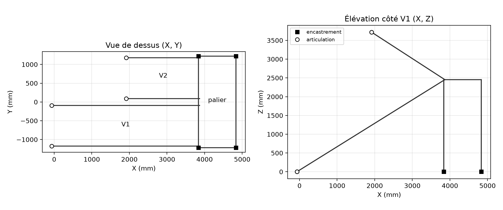
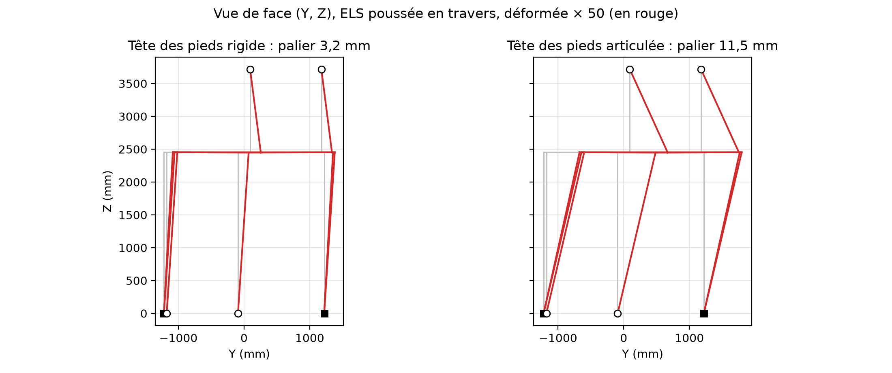

Escalier droit à demi-tour, acier et chêne, palier autoporté sur 4 pieds.
3 novembre 2026 (version du 2 novembre complétée : diagonales du palier, revue externe) · dépôt mj42584/staircase_solidcraft_claude, branche diagonales-palier (PR #37) · scripts calc/predim.py, calc/portique.py, calc/rapport/figures.py
Statut du document. Ce rapport donne des ordres de grandeur, établis par un agent (Claude) à partir du modèle 3D et de scripts Python. Ce n'est pas une note de calcul : il ne remplace pas la vérification et la validation par un bureau d'études avant fabrication. Les valeurs marquées supposé n'ont pas été fournies et sont à confirmer.
Sous les charges verticales, la structure acier travaille à 32 % au plus de sa résistance. Les marches en chêne de 60 mm passent à 25 %.
Stabilité du palier. En long (X), les limons font bracon entre la dalle et l'arrivée : déplacement 0,04 mm. En travers (Y), deux diagonales en tube 40 × 40 × 3 (une par face d'about du palier, D30) le tiennent. Il se déplace de 0,31 à 0,37 mm, soit 4 % de la limite. Sans ces diagonales, le déplacement atteignait 11,5 mm (141 %).
Chevilles. Avec les diagonales, chaque cheville M12 reçoit au plus 2,3 kN de traction et 1,5 kN de cisaillement (pieds de poteau). Aux pieds des limons V1, c'est 3,7 kN de cisaillement, sans traction. Avec un béton C25/30 non fissuré et une cheville M12 8.8 supposée (hef 70 mm, formules de l'EN 1992-4 de mémoire, ni dalle ni distances au bord fournies), le taux le plus élevé est de 16 % (cône de béton en traction). La cheville réelle est à vérifier avec son ETA.
Garde-corps. Avec les potelets renforcés (D32, D34), la poussée de 0,6 kN/m à hauteur de main courante (valeur validée par l'utilisateur) passe, avec peu de réserve sur les vis M8. Reste non conforme :
Conclusion : la structure porteuse et le contreventement passent. Le garde-corps passe avec les potelets 40 × 40 × 3, sous réserve de la raideur des liaisons marche-cornière (3 vis à bois par cornière), qui commande la torsion des limons V1 (§6.2).
Escalier intérieur d'une grange, pour un usage de logement. Deux volées sont séparées par un palier intermédiaire sans différence de niveau.
Repère (celui du modèle 3D) : origine au pied de la première contremarche, au milieu du jour ; X le long des volées, Y en travers (V1 côté Y négatif), Z vers le haut.
Les valeurs viennent du modèle paramétrique cad/escalier.solidcraft (tableau des paramètres de CONCEPTION.md, §3), recopiées à la main dans calc/predim.py. Les hypothèses de calcul (charges, matériaux, critères) sont celles du script.
| Donnée | Valeur | Origine |
|---|---|---|
| Hauteur à monter (sol fini bas → dessus de la planche d'arrivée) | 3 848 mm | mesurée sur site |
| Nombre de contremarches | 22, dont 15 en V1 et 7 en V2 | choix de l'utilisateur |
| Hauteur de marche h | 174,91 mm | calculée : 3 848 / 22 |
| Giron | 274 mm | choix de l'utilisateur |
| Angle des volées ; Blondel 2h + g | 32,55° ; 624 mm | calculés |
| Emmarchement (largeur d'une volée) | 1 000 mm | choix |
| Jour entre volées : 2 × 85 + jeu de 100 | 270 mm | calculé |
| Palier : profondeur × largeur hors tout | 1 000 × 2 440 mm | choix ; largeur = 2 × (1 000 + 85) + 270 |
| Niveau du palier (dessus du plancher) ; axe du cadre | 2 623,6 mm ; Z = 2 453,6 mm | calculés : 15 h ; − 60 − 220/2 |
| Rive du palier (poutre avant) ; poutre arrière | X = 3 836 ; X = 4 836 mm | calculés : 14 × 274 ; + 1 000 |
| Portée des limons V1 / V2, en plan | 3 836 / 1 918 mm | 14 et 7 girons |
| Portée des limons V1 / V2, inclinée | 4 551 / 2 275 mm | ÷ cos 32,55° |
| Épaisseur des marches et du plancher (chêne) | 60 mm | choix de l'utilisateur |
| Hauteur des pieds (sol → dessous de la platine de tête) | 2 328,6 mm | calculée |
| Platines des pieds (tête et sol) | 180 × 180 × 15 mm | choix ; marge de 40 mm supposée |
| Fixation au sol des pieds | 4 chevilles M12 à ± 70 mm de l'axe | modèle 3D ; chevilles supposées |
| Chevilles : référence, résistance, béton | non fournis | à fournir : la résistance n'est pas vérifiée (§5.4) |
| Contreventement en travers | 2 diagonales, une par face d'about, articulées entre la tête d'un pied et le pied de l'autre, L = 3 460 mm | choix de l'utilisateur (D30) ; pas encore dans le modèle 3D |
| Potelets de volée : pas ; bras de levier | 887 mm en plan (1 052 en pente) ; 930 mm | modèle 3D (5 par main courante V1) ; levier = 900 mm + descente de 30 mm des limons |
| Potelets du fond du palier : pas ; bras de levier | 727 mm ; 1 000 mm | modèle 3D (4 potelets, D34) |
| Platine basse des potelets | 130 × 50 × 8 mm, 2 vis M8 dans l'axe du limon, entraxe 100 mm | choix de l'utilisateur |
| Fixation en tête des pieds | 2 boulons M12 sous l'aile basse du cadre | choix de l'utilisateur (D11) |
| Pied des limons V1 | platine au sol de 200 mm, 2 chevilles M12 alignées dans l'axe du limon | choix (D28) ; chevilles supposées |
| Liaison limons / poutre avant ; limons V2 / arrivée | platine d'about de 15 mm, 2 boulons M12 | choix de l'utilisateur |
| Élément | Section | Caractéristiques | Origine |
|---|---|---|---|
| Limons, cadre du palier | UPE 220 (h 220, b 85, tw 6,5, tf 12) | A = 33,9 cm² ; Iy = 2 680 cm⁴ ; Wy = 244 cm³ ; 26,6 kg/m | catalogue EN 10365 |
| Iz = 244 cm⁴ ; Wz = 42,4 cm³ ; J = 11,6 cm⁴ ; centre de cisaillement à 32 mm du dos de l'âme | calculés en parois minces, sans congés | ||
| Pieds | tube carré 100 × 100 × 5 | A = 19,0 cm² ; I = 286,6 cm⁴ ; W = 57,3 cm³ ; J = 428,7 cm⁴ ; i = 38,8 mm | calculés (angles vifs) |
| Diagonales | tube carré 40 × 40 × 3 | A = 4,44 cm² ; I = 10,2 cm⁴ ; i = 15,2 mm | choix de l'utilisateur (D36), épaisseur supposée ; calculés (angles vifs) |
| Potelets | tube carré 40 × 40 × 3 | I = 8,5 cm⁴ ; W = 4,3 cm³ (calcul PyNite/predim, angles vifs) | D34, épaisseur supposée ; calculés (angles vifs) |
| Marches | chêne 274 × 60 mm, portée 1 000 mm | W = 164,4 cm³ ; I = 493,2 cm⁴ | calculés |
| Cornières des marches | L 30 × 30 × 3, 200 mm, 2 par marche | 1,36 kg/m | catalogue |
| Boulons | M12 ; M8 | As = 84,3 mm² ; 36,6 mm² | catalogue |
| Matériau | Valeurs | Statut |
|---|---|---|
| Acier des profilés et platines | S235 : fy = 235 MPa ; E = 210 000 MPa ; G = E / 2,6 ; γM0 = γM1 = 1,0 ; 78,5 kN/m³ | nuance supposée |
| Chêne des marches et du plancher | D30 (EN 338) : fm,k = 30 MPa ; E = 11 000 MPa ; kmod = 0,8 (moyen terme, classe de service 1) ; γM = 1,3 → fm,d = 18,46 MPa ; 7,5 kN/m³ | classe supposée |
| Boulons | classe 8.8 : fub = 800 MPa ; γM2 = 1,25 → M12 : Fv,Rd = 0,6 fub As / γM2 = 32,4 kN ; M8 : Ft,Rd = 0,9 fub As / γM2 = 21,1 kN | classe supposée |
| Action | Valeur | Référence |
|---|---|---|
| G : poids propres | chêne 7,5 kN/m³ ; UPE 0,266 kN/m ; tube 0,149 kN/m ; cornières 5,3 N par marche ; marche complète 128,6 N ; mains courantes et potelets 65,6 kg répartis sur les 18,1 m de lignes de main courante, soit 0,036 N/mm | catalogue, masses du modèle 3D |
| Q : exploitation répartie | qk = 2,5 kN/m² sur marches et palier | EN 1991-1-1, cat. A (escaliers), AN française |
| Q : charge ponctuelle | Qk = 2 kN, vérifications locales des marches, non cumulée avec qk | idem |
| Poussée sur les mains courantes | qgc = 0,6 kN/m, horizontale | cat. A, AN française : validée par l'utilisateur (2026-11-03) |
| Défauts de verticalité | φ = φ0 αh αm = 1/200 × 1,0 × 0,79 = 1/253, en forces horizontales aux 4 angles du palier | EN 1993-1-1 §5.3.2 |
Non retenus : neige et vent (intérieur), séisme, charges de montage.
| Combinaison | ELU | ELS |
|---|---|---|
| Charges verticales + défauts en X ou en Y | 1,35 G + 1,5 Q + H | G + Q + H |
| Poussée des mains courantes en X ou en Y (dominante) | 1,35 G + 1,5 GC + 1,05 Q + H | G + GC + 0,7 Q + H |
Critères :
Deux calculs complémentaires, qui lisent les mêmes paramètres :
Chaque script vérifie ses formules au lancement par des cas connus : poutre sur deux appuis (flèche 5wL⁴/384EI, moment wL²/8), poteau comprimé (signe de l'effort normal), Blondel, pas des potelets relevé dans le modèle 3D. Le modèle en barres vérifie aussi l'équilibre de chaque combinaison (§5.2).
Les marches sont calculées en chêne 274 × 60 mm, sur deux appuis simples (les cornières) espacés de 1 000 mm. C'est un choix côté sécurité : l'encastrement partiel est négligé.
Chaque limon est une poutre inclinée sur 2 appuis. Il porte une demi-volée, avec les charges exprimées par mètre horizontal :
Le moment vaut M = wLh² / 8, et la flèche se calcule sur la portée inclinée.
UPE 220 de 2 440 mm sur 2 appuis aux angles. Elle porte un demi-palier (wG = 0,491 N/mm, wQ = 1,25 N/mm) et les 4 réactions de limons au milieu de leurs ailes : 5,13 kN par limon V1 et 2,56 kN par limon V2 à l'ELU.
Chaque potelet est une console encastrée sur sa platine basse. Il reçoit la poussée d'un pas de main courante, à hauteur de main courante :
Avec le module plastique (2,36 cm³, section de classe 1), le potelet resterait à 212 %. Il ne passe pas, même si la poussée réelle était plus faible que la valeur supposée.
| Élément | Critère | Valeur | Limite | Taux |
|---|---|---|---|---|
| Marche chêne 60 mm | contrainte ELU | 4,69 MPa | 18,46 MPa | 25 % |
| Marche chêne 60 mm | flèche ELS | 0,80 mm | 3,33 mm | 24 % |
| Limon V1 (L = 4 551) | contrainte ELU | 20,2 MPa | 235 MPa | 9 % |
| Limon V1 | flèche ELS | 1,30 mm | 15,17 mm | 9 % |
| Limon V2 (L = 2 275) | contrainte ELU | 5,0 MPa | 235 MPa | 2 % |
| Limon V2 | flèche ELS | 0,08 mm | 7,58 mm | 1 % |
| Poutre avant (L = 2 440) | contrainte ELU | 27,1 MPa | 235 MPa | 12 % |
| Poutre avant | flèche ELS | 0,45 mm | 8,13 mm | 6 % |
| Pied 100×5 (H = 2 344) | flambement ELU | 12,3 kN | 176,4 kN | 7 % |
| Boulons M12 8.8, platine V1 | cisaillement ELU | 2,63 kN | 32,4 kN | 8 % |
| Potelet de volée V1 40×3 (pas 1 052, h 930) | flexion ELU | 172,7 MPa | 235 MPa | 73 % |
| Vis M8 8.8, platine basse de potelet | traction ELU | 17,6 kN | 21,1 kN | 84 % |
| Potelet du fond 40×3 (pas 727, h 1 000) | flexion ELU | 128,3 MPa | 235 MPa | 55 % |
| Potelets V2 40×3 ext (pas 804) / int (pas 957) | flexion ELU | 132 / 157 MPa | 235 MPa | 56 % / 67 % |
Pièce par pièce, la structure porteuse passe largement. Le garde-corps passe avec les potelets 40×3 (vis M8 à 84 %). Les marches de 60 mm ont de la réserve : le minimum trouvé le 27 octobre était de 38 mm. Le prédimensionnement ne dit rien de la stabilité d'ensemble, d'où le modèle en barres.

Figure 1 — Barres du modèle. Carrés : encastrements (pieds au sol). Ronds : articulations (pied des limons V1, arrivée des limons V2). Les deux diagonales sont dans les faces avant et arrière du palier.
| Élément | Critère | Tête rigide | Taux | Tête articulée | Taux | Limite |
|---|---|---|---|---|---|---|
| Palier, en long (X) | déplacement ELS | 0,04 mm | 1 % | 0,04 mm | 1 % | 8,2 mm |
| Palier, en travers (Y) | déplacement ELS | 0,31 mm | 4 % | 0,37 mm | 5 % | 8,2 mm |
| Poutre avant | flexion forte + faible ELU | 19,4 MPa | 8 % | 20,0 MPa | 9 % | 235 MPa |
| Poutre avant | torsion ELU | 15,7 MPa | 12 % | 15,5 MPa | 11 % | 135,7 MPa |
| Pieds 100×5 | N / Nb,Rd + M / MRd ELU | 0,09 | 9 % | 0,14 | 14 % | 1,00 |
| Diagonales 40×3 (L = 3 001) | flambement ELU | 8,0 kN | 43 % | 8,6 kN | 46 % | 18,7 kN |
| Diagonales 40×3 | traction ELU | 8,2 kN | 8 % | 8,7 kN | 8 % | 104,3 kN |
| Limons V1 | flexion forte + faible ELU | 74,2 MPa | 32 % | 74,2 MPa | 32 % | 235 MPa |
| Limons V2 | flexion forte + faible ELU | 18,5 MPa | 8 % | 18,5 MPa | 8 % | 235 MPa |
Pieds : flambement avec Lcr = H, le palier étant tenu en travers. Diagonales : flambement sur toute leur longueur, courbe c ; le jeu des trous des goussets n'est pas compté. Limons V1 : My = 5,0 kN·m (charges verticales) et Mz = 2,4 kN·m (poussée en travers, axe faible) ; ce sont les plus sollicités. La poutre avant est moins chargée que dans le prédimensionnement (19 à 20 MPa contre 26,6 MPa), car ses angles soudés aux poutres latérales la rendent continue : le moment en travée baisse. En échange, elle travaille en torsion (11 %).
| Appui | Nombre | N vertical | V horizontal | M |
|---|---|---|---|---|
| Pied de poteau, tête rigide | 4 | 13,2 kN | 6,1 kN | 0,30 kN·m |
| Pied de poteau, tête articulée | 4 | 13,3 kN | 6,2 kN | 0,13 kN·m |
| Pied de limon V1 (articulé) | 2 | 9,7 kN | 7,2 kN | 0 |
| Arrivée limon V2 (articulée) | 2 | 7,4 kN | 7,3 kN | 0 |
Soulèvement maximal d'un pied de poteau : 4,2 kN, au pied de la diagonale tendue, avec G favorable.
Chevilles M12, efforts par cheville. On suppose une platine rigide qui tourne autour de son centre, sans compter le béton comprimé, ce qui va dans le sens de la sécurité. La traction vaut T = −N/4 + (|Mx| + |My|) / (4 × 70 mm). Les maxima de T et de V sont pris séparément, sur toutes les combinaisons.
| Appui | Chevilles | Traction T | Cisaillement V | Résistance |
|---|---|---|---|---|
| Pied de poteau | 4, à ± 70 mm | 2,3 kN | 1,5 kN | cône de béton 12,4 kN (16 % au poteau) ; acier 45 kN en traction, 27 kN en cisaillement ; levier 24,9 kN (15 % au pied de limon) ; interaction ≤ 8 % ; hypothèses : C25/30 non fissuré, hef 70 mm, loin des bords |
| Pied de limon V1 | 2, dans l'axe du limon | 0 | 3,7 kN |
Sans les diagonales, ces chevilles auraient reçu 10 à 18 kN de traction (version du 2 novembre).

Figure 2 — Vue de face, ELS de la poussée en travers, déformée amplifiée 1 000 fois. Les nœuds sont reliés par des droites. Le palier ne bouge que de 0,3 mm. Ce qui se voit surtout, c'est la flexion des limons sur leur axe faible sous la poussée.
Le modèle applique la poussée à l'axe des barres. En réalité, elle s'exerce à 930 mm au-dessus du limon (1 000 mm au palier). Le couple qui en résulte passe par les potelets et leur platine, puis il fait tourner les limons :
| Limon | T | τ | Limite | Taux |
|---|---|---|---|---|
| V1 (T = t L) | 4,3 kN·m | 449 MPa | 135,7 MPa | 331 % |
| V2 (T = t L / 2) | 1,1 kN·m | 110 MPa | 135,7 MPa | 81 % |
Une relecture externe (DeepSeek) de la version du 2 novembre a relevé les points suivants. Ce qu'il en est fait :
| Point | Suite |
|---|---|
| B1 — chevilles non calculées | Fait : efforts par cheville calculés par le script (§5.4). La résistance n'est pas vérifiée : il manque la référence de la cheville et le béton. |
| B2 — contreventement non calculé | Fait : 2 diagonales en tube calculées (D30, §5 et §6.1). |
| I1 — équilibre hors script | Fait : assertion d'équilibre dans portique.py, pour chaque combinaison et dans les 3 directions. |
| I2 — valeur propre hors script | Retirée du rapport : elle concernait le palier sans diagonales. |
| I3 — moment de la poussée à hauteur de main courante | Fait : ordre de grandeur (§6.2). Avec les potelets 40×3 ils passent ; la torsion des limons V1 dépend de la raideur des liaisons marche-cornière (§6.2). |
| I4 — Lcr différent dans les deux scripts | Gardé : la longueur à l'axe du cadre est plus grande, donc côté sécurité (§4.4). |
| I5 — 15,9 m contre ≈ 29 m de main courante | Non retenu : il y a 2 limons V1 et 2 limons V2, pas 4 de chaque. 2 × 4,64 + 2 × 2,32 + 2 × 1,00 = 15,9 m, et l'équilibre le confirme (§5.2). |
| I6 — raideur « rigide » et platine de tête | Précisé : la section « rigide » sert aux excentricités de 29 mm, pas à la tête des pieds, qui est encadrée par les deux cas (§5.2). |
| M1 — αh ≥ 2/3 redondant | Gardé : c'est la borne inférieure de l'EN 1993-1-1 §5.3.2. |
| M4 — poids des mains courantes | Fait : 65,6 kg ajoutés en G (§2.4). |
| M5 — poutre avant, prédimensionnement contre modèle | Fait : explication au §5.3. |
| M6 — H/300 | Fait : présenté comme un critère de confort (§2.5). |